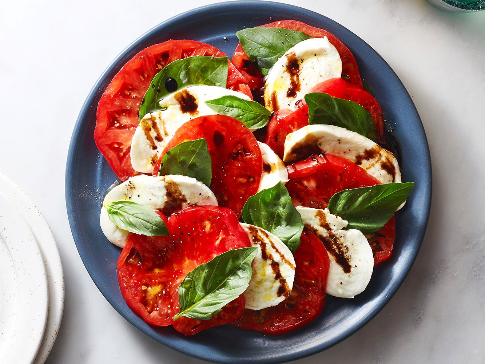

Caprese Salad

Description
a crisp and fresh summer snack perfect for an evening get together.
What you'll need:
- 2 to 4 large heirloom tomatoes
- 8 ounces fresh mozzarella cheese
- 8 to 12 basil leaves
- Salt and pepper
- 1/4 cup olive oil
For the Balsamic Glaze:
- 1 cup balsamic vinegar
- 2 Tbs of sugar
Now lets put it all together:
- Cut the tomatoes into medium to thin slices.
- cut the fresh mozzarella into slices of the same width.
- pull off the best looking 8 to 12 basil leaves
- lay the mozzarella on top of the tomatoes, garnish with basil and salt and pepper.
- Finally, drizzle with olive oil.
Now on to the Balsamic Glaze:
- simmer the cup of balsamic vinegar on medium along with the sugar for 5 to 10 minutes. Make sure not to leave it unattended and stir occasionally because it may scorch.
- Once cooled, drizzle Balsamic glaze on top of the other ingredients and Enjoy!